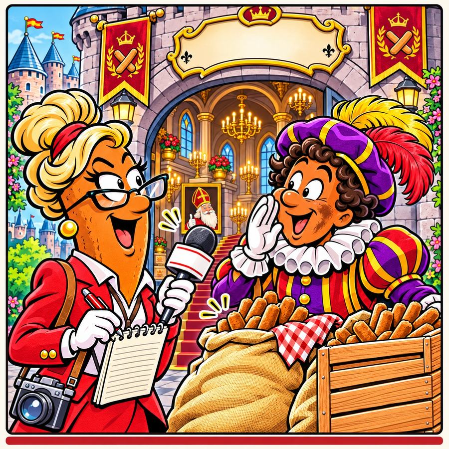

De volledige avonturen en berichten uit Frikandellenstad: een vrolijke, fictieve stripstad die met een flinke knipoog is geïnspireerd op Helmond.
Let op: alle verhalen hieronder zijn humoristische fictie. Frikandellenstad is geen echte gemeente en deze stadsberichten zijn geen werkelijk nieuws.
NIEUWE STRIP · 27 NOVEMBER 2026 · CARNAVAL · FICTIE
Een praalwagen speciaal XXL!
Ria Rasp staat bij de bouwloods als Professor Uibrecht zijn tekening uitrolt. Voor carnaval bouwt hij een reuzenfrikandel op wielen. Handhaver Knak legt de meetlat erlangs. Vier en een halve meter. „Precies goed!”
Braat Wurst bekijkt de kale frikandel en pakt zijn spuitzak. Even later steekt een flinke toef mayonaise boven de rode streep uit. Knak kijkt van zijn meetlat naar de wagen. Mayo en Curry hebben hun lepels al in de aanslag.
Tik op de strip om hem op volledig formaat te lezen.↑ Terug naar bovenNIEUWE STRIP · 26 NOVEMBER 2026 · STADSVERWARMING · FICTIE
De warmste uitvinding van het jaar!
Ria Rasp heeft haar microfoon nog in de hand als professor Uibrecht met een plan komt voor de tijdelijke uitval van de stadsverwarming. Even later borrelt het vet, gaat de kraan open en worden de eerste radiatoren warm.
“Het ruikt hier naar speciaal!” klinkt het bij een van de radiatoren. Dat nieuws gaat snel. Even later staat er een rij bij de frituur en ziet de professor zijn warmtevoorraad verdwijnen onder een flinke schep uitjes.
Tik op de strip om hem op volledig formaat te lezen.↑ Terug naar bovenNIEUWE STRIP · 25 NOVEMBER 2026 · SLAAPONDERZOEK · FICTIE
De Grote Snurkproef!
Professor Uibrecht zoekt een proefpersoon voor zijn slaaphorloge. Opa Frikandel meldt zich meteen. Voor dit onderzoek mag hij zijn ogen dichtdoen. “Eindelijk een onderzoek waarvoor ik niets hoef te doen!”
Die nacht schrikt de professor wakker van zijn eigen meetapparatuur. Op het scherm knippert een frituurmandje. Oma Frikandel weet precies wat ze nog mist aan deze uitvinding.
Tik op de strip om hem op volledig formaat te lezen.↑ Terug naar bovenNIEUWE STRIP · 24 NOVEMBER 2026 · DISCGOLF · FICTIE
Een schijfje speciaal!
BERKENSNACK – Ria Rasp heeft nieuws aan de waterkant. Er ligt een plan om bij Berkensnack discgolf te spelen. Mayo kijkt naar de metalen mand. “Dus geen golfballen?” Curry houdt een blauwe schijf omhoog. Vanuit de snackkraam klinkt meteen de stem van Braat Wurst. “Ik heb ook schijven!”
Even later suist er een versgebakken schijf richting de mand. Nog vóór de kettingen rinkelen, plukt een meeuw hem uit de lucht. “Die telt niet als hole-in-one!” roept Handhaver Knak. Braat Wurst heeft het te druk om de score bij te houden. Er staan al drie meeuwen bij zijn kraam.
Tik op de strip om hem op volledig formaat te lezen.↑ Terug naar bovenNIEUWE STRIP · 23 NOVEMBER 2026 · TONPRATEN · FICTIE
🎭 Een ton vol grappen!
Tonpraten is weer helemaal in! En in Frikandellenstad wordt dat nieuws natuurlijk flink verkeerd begrepen. Ria Rasp vertelt over het carnavaleske optreden, maar Mayo ziet vooral kansen voor een vat vol mayonaise. Curry doet er meteen een flinke scheut curry bovenop.
Professor Uibrecht legt uit dat je in een ton juist grappen vertelt. Handhaver Knak ontdekt intussen tot zijn schrik dat er complete sausleidingen zijn aangelegd. Braat Wurst betreedt het podium en belooft een knaller van een grap. Dat blijkt niet overdreven: een grote sausfontein zorgt voor het meest smeuïge optreden van Frikandellenstad!
↑ Terug naar bovenNIEUWE STRIP · 22 NOVEMBER 2026 · VRIENDSCHAP · FICTIE
🚲 Vriendschap op volle kracht!
In Frikandellenstad draait vandaag alles om vriendschap op wielen! Ria Rasp hoort over een nieuw lied over vriendschap en een videoclip met een partybike in het park. Voor Mayo en Curry is dat meteen het startsein voor een vrolijk avontuur.
Terwijl Mayo vol enthousiasme op de feestfiets springt, maakt Curry één ding duidelijk: iedereen moet wel meetrappen. Ook Opa en Oma Frikadel doen mee. Opa denkt terug aan hun tandem van vroeger, maar Oma weet nog precies wie toen het zwaarste werk deed: zij trapte voor twee!
Zelfs Handhaver Knak komt poolshoogte nemen. Op zijn vraag wie het bonte gezelschap eigenlijk bestuurt, antwoordt Mayo: “De vriendschap, meneer Knak!”
↑ Terug naar bovenNIEUWE STRIP · 22 NOVEMBER 2026 · KASTEEL-TRAVERSE · FICTIE
🌿 De Traverse krijgt een groen sausje!
De Kasteel-Traverse krijgt een groenere inrichting. Ria Rasp staat vooraan bij de werkzaamheden en meldt dat er 8.000 vierkante meter groen op komst is. In Frikandellenstad klinkt dat meteen als een culinair experiment!
Professor Uibrecht ziet ontelbaar veel blaadjes sla en Mayo wil er natuurlijk een klodder saus bij. Burgemeester Frik is trots op de groene plannen, terwijl Handhaver Knak iedereen eraan herinnert dat eerst de kabels en leidingen aan de beurt zijn. Curry vraagt zich af hoelang de weg nog in de frituur ligt.
De snelfietsroute F270 tussen Frikandellenstad en Vetoven is open! Maar liefst 14 kilometer zonder onderbreking: voor Mayo en Curry het perfecte excuus om er meteen vol gas overheen te vliegen.
Ria Rasp brengt verslag uit, maar Handhaver Knak fluit de twee fietsers terug: een snelfietsroute is geen snackracebaan. Burgemeester Frik ziet vooral minder auto's en meer fietsers. Braat Wurst is minder vrolijk: straks rijden alle klanten zijn kraam voorbij voordat ze zijn worsten ruiken!
↑ Terug naar bovenNIEUWE STRIP · 20 NOVEMBER 2026 · MAYO & CURRY · FICTIE
🔎 Het grote Frikadel-mysterie!
Is het nu frikadel of frikandel? In Frikandellenstad zorgt die ene letter voor grote verwarring! Mayo en Curry gaan op zoek naar de waarheid en kloppen aan bij Opa en Oma Frikadel.
Opa vertelt dat de traditionele frikadel een gekruide gehaktbal is. Oma laat zien dat een frikandel de langwerpige snack uit de frituur is. En als het over de frikandel speciaal gaat, hebben ze Mayo en Curry natuurlijk allebei nodig.
Het grote Frikadel-mysterie! Klik op de strip om het volledige verhaal te lezen.
🚨 EXCLUSIEF! Ria Rasp onthult het grootste geheim van het Kasteel van Wesselfriet!
Morgen opent het kasteel zijn deuren voor alle bezoekers van Sinterklaas. Maar Ria Rasp kon niet wachten en ging alvast op onderzoek uit. Wat ze ontdekte, verklaart waarom de Sint ieder jaar juist in Frikandellenstad verblijft!
FRIKANDELLENSTAD – 16 november 2026 | Door Ria Rasp, De Frikandellenbode

Ria Rasp treft Smikkelpiet bij de kasteelpoort. Illustratie: De Frikandellenbode.
Morgen is het eindelijk zover! Het Kasteel van Wesselfriet opent zijn deuren voor alle bezoekers die een kijkje willen nemen in het tijdelijke onderkomen van Sinterklaas en zijn Pieten.
Maar onze nieuwsgierige sterverslaggeefster Ria Rasp kon natuurlijk niet tot morgen wachten. Zij besloot vandaag alvast een geheime sneakpreview te nemen en rond te snuffelen bij het eeuwenoude kasteel.
En dat leverde een wel héél smakelijke ontdekking op!
Waarom toch ieder jaar Frikandellenstad?
Jarenlang was het een groot raadsel. Waarom kiest Sinterklaas ieder jaar opnieuw voor het Kasteel van Wesselfriet? Waarom niet voor een paleis in Amsterdam, een luxe hotel in Maastricht of een zonnige villa in Spanje?
Ria vermoedde al langer dat er meer achter zat.
En jawel! Bij de achterpoort van het kasteel liep ze niemand minder dan Smikkelpiet tegen het lijf. Hij sjouwde met meerdere overvolle boodschappentassen richting de kasteelkeuken.
Uit de tassen steeg een onweerstaanbare geur op.
“Wat heb jij daar allemaal bij je?”, vroeg Ria nieuwsgierig.
“Frikandellen!”, fluisterde Smikkelpiet. “Maar niet verder vertellen, hoor. De Sint en alle Pieten zijn er helemaal verslaafd aan!”
Het grote geheim was ontdekt: Sinterklaas en zijn Pieten zijn stapelgek op de beroemde Frikandellenstadse frikandellen!
Iedere Piet zijn eigen favoriet
Volgens Smikkelpiet begint de voorpret al tijdens de lange bootreis vanuit Spanje.
“Ze vragen voortdurend wanneer we weer in Frikandellenstad zijn. En de Sint is nog het ergste!”
Iedere Piet blijkt bovendien zijn eigen favoriete bereiding te hebben.
Pakjespiet houdt van curry met extra uitjes, Schoorsteenpiet zweert bij pindasaus en Hoofdpiet eet zijn frikandel het liefst gewoon zonder saus.
Smikkelpiet zelf? Die neemt er het liefst drie tegelijk!
Maar de grootste fijnproever is Sinterklaas zelf.
“De Sint wil altijd speciaal. Met mayonaise, curry en héél veel uitjes. En geloof me, als er te weinig uitjes op zitten, stuurt hij me gewoon terug!”
Zelfs de stoomboot gaat vol terug!
En daar bleef het niet bij.
Smikkelpiet onthulde dat de stoomboot na het jaarlijkse verblijf in Frikandellenstad wordt volgeladen met dozen Frikandellenstadse frikandellen.
In speciale vrieskisten gaan ze mee naar Spanje, zodat Sinterklaas en zijn Pieten ook daar nog maanden kunnen genieten van hun favoriete lekkernij.
“Vorig jaar hadden we veel te weinig meegenomen”, bekende Smikkelpiet. “Dat overkomt ons geen tweede keer!”
De Sint verraadt zichzelf!
Net toen Ria afscheid wilde nemen, klonk vanuit een openstaand raam van het Kasteel van Wesselfriet plotseling een vertrouwde stem.
“Smikkelpiet! Waar blijft mijn frikandel speciaal? En vergeet de uitjes niet!”
Ria keek omhoog en zag nog net de mijter van Sinterklaas achter het gordijn verdwijnen.
Het bewijs was geleverd!
Sinterklaas komt naar Nederland voor de kinderen, maar verblijft in Frikandellenstad voor de frikandellen!
Waarom dit geheim zo lang verborgen moest blijven, begrijpt Ria inmiddels ook.
“Als heel Nederland dit weet”, fluisterde Smikkelpiet, “dan zijn straks alle frikandellen uitverkocht!”
Morgen gaan de kasteeldeuren open!
Vanaf morgen kunnen bezoekers zelf een kijkje nemen in het Kasteel van Wesselfriet. Of ze daar ook de geheime frikandellenvoorraad van Sinterklaas zullen ontdekken, is nog maar de vraag.
Smikkelpiet heeft Ria in ieder geval dringend verzocht haar mond te houden.
Helaas voor hem was hij vergeten dat Ria Rasp voor De Frikandellenbode werkt.
En bij De Frikandellenbode blijft geen enkel smeuïg geheim lang bewaard!
Ria Rasp blijft de ontwikkelingen in het kasteel op de voet volgen. Wordt vervolgd…
De Frikandellenbode – Waar iedereen speciaal is!
Dit bericht is een humoristisch, fictief verhaal uit Frikandellenstad.
Kasteel van Wesselfriet klaar voor Sint: het vet staat al heet!
SPECIAAL CENTRUM – In het hart van Frikandellenstad wordt koortsachtig gewerkt aan een vorstelijk onthaal. Kasteel van Wesselfriet is helemaal klaar voor Sinterklaas, die komende zondag 15 november met zijn Pieten in Helmond arriveert en er zal overnachten. De kasteelpoort glimt, de loper ligt uitgerold en de kasteelkok heeft zijn frituurschort gestreken.
“Het vet staat al heet!”, klinkt het uit de keuken. “Voor de Sint en al zijn Pieten kunnen we volop bakken in deze koude dagen. Frikandellen, kroketten en bitterballen: niemand hoeft hier met koude handen en een lege maag rond te lopen.” Of dat vet tot zondag warm blijft? “Nee hoor, we zetten de frituur op tijd weer aan. Zelfs een kasteel heeft een energierekening.”
De Pietenkamer is inmiddels ingericht met stapelbedden, verlanglijstjes en een aparte kast voor alle zakken. De Hoofdpiet vroeg voor de zekerheid of het kasteel ook een schoorsteen heeft. “Zeker”, antwoordde de kasteelheer, “maar voor grote bestellingen hebben we gewoon de ophaalbrug.”
Ook aan het paard is gedacht: er ligt een flinke wortel klaar. “Een frikandel speciaal voor het paard? Dat doen we dus niet”, waarschuwt de dierenverzorger. “Voor hem houden we het bij paardenvoer en een veilig plekje.”
Burgemeester Frik kijkt tevreden naar het kasteel midden in Speciaal Centrum. “Hier is iedereen speciaal, maar dit weekend bakken we het wel héél bruin. Welkom Sinterklaas, welkom Pieten! De kou blijft buiten, de gezelligheid binnen en de snacks zijn onderweg.”
De Frikandellenbode houdt dit weekend de frituursituatie nauwlettend in de gaten. Eén ding staat vast: in Kasteel van Wesselfriet kan de Sint warm onthaald worden – en wordt niemand afgescheept met een koude kroket.
Dit bericht is onderdeel van de fictieve Frikandellenbode.
Noodsteunpunt oefent volop, maar frikandellen winnen de lunch
HOUTSE HAPS – Vandaag is in de wijk Houtse Haps volop geoefend met het noodsteunpunt. De deelnemers namen hun taken serieus en onderzochten hoe zij elkaar kunnen helpen wanneer het erop aankomt. Maar tijdens de lunch ontstond onverwacht een tweede oefening: wie was het snelst bij de snacks?
De frikandellen en andere snacks bleken nauwelijks bij te houden. Het aanwezige fruit keek vanaf de schaal machteloos toe. “De frikandellen liepen harder dan het fruit,” constateerde Tom Kroket. “Voor de appels en bananen was geen doorkomen aan. Die hadden duidelijk een achterstand in de uitjesronde.”
Volgens de officieuze redactie van de Frikandellenbode is daarmee één ding glashelder: Houtse Haps is uitstekend voorbereid op een stevige trek. Burgemeester Frik benadrukt wel dat een noodsteunpunt er in de eerste plaats is om inwoners bij een noodsituatie te helpen. “Samenredzaamheid is belangrijk. En een beetje saus houdt de moed erin.”
De eindconclusie van deze geheel onofficiële lunchinspectie? De oefening draaide om paraatheid, maar de frikandellen gingen met de eerste prijs aan de haal. Het fruit krijgt bij de volgende editie een herkansing.
Dit bericht is onderdeel van de fictieve Frikandellenbode.
Grote consternatie in Frikandellenstad. Om precies 12.03 uur ontdekte een voorbijganger dat de laatste ui van het Curryplein spoorloos was. De burgemeester heeft onmiddellijk crisisoverleg uitgeroepen.
Baron van Uitjes spreekt van een zeer emotionele situatie. “Ik ben tot in mijn binnenste geraakt,” liet hij weten. Bij de plaatselijke snackbar is inmiddels een verdachte aangehouden: een frietje dat wel erg veel op zijn kerfstok had.
De gemeente roept iedereen op kalm te blijven. Volgens de laatste berichten is er inmiddels een nieuwe zak uien bezorgd. Het feest kan doorgaan.
Dit bericht is onderdeel van de fictieve Frikandellenbode.
Na negentig spannende minuten heeft FC Frikandellenstad de stadsderby gewonnen. Het beslissende doelpunt viel in de 88e minuut, toen trainer Kroket besloot het hele elftal van een extra portie curry te voorzien.
“Soms heb je net dat beetje pit nodig,” zei de trainer na afloop. De tegenpartij protesteerde, maar de scheidsrechter oordeelde dat er geen sprake was van buitenspel, wel van buitensaus.
Het bestuur overweegt de nieuwe tactiek officieel op te nemen in het trainingsprogramma.
Dit bericht is onderdeel van de fictieve Frikandellenbode.
Frikandellenstad maakt zich op voor een feestelijk seizoen. De commissie heeft besloten dat dit jaar elk evenement het predicaat Speciaal verdient, van de intocht tot de straatbarbecue.
Burgemeester Frik presenteerde alvast het motto: “Als het feest is, gaan de sausflessen open!” Mevrouw Mayo maakt zich geen zorgen over de organisatie. “We houden het gewoon lekker bij elkaar,” aldus de enthousiaste organisator.
De complete agenda volgt zodra de stadsredactie is uitgegeten.
Dit bericht is onderdeel van de fictieve Frikandellenbode.
Na maanden vergaderen heeft Frikandellenstad een gloednieuwe rotonde. Het middeneiland heeft de vorm van een frikandel en de rijstroken heten Curry, Mayo en Uitjes.
“Eindelijk een verkeersoplossing waar iedereen omheen kan,” verklaarde de wethouder van Doorstroming. Automobilisten zijn positief, al maakt één bestuurder inmiddels voor de zevende keer een rondje omdat hij de juiste sausafslag niet kan vinden.
De gemeente onderzoekt of er een extra afslag voor fietsende kroketten nodig is. Verkeersborden met de tekst ‘niet frituren tijdens het rijden’ komen voorlopig niet terug.
Dit bericht is onderdeel van de fictieve Frikandellenbode.
Ophaalbrug blijft open voor extra lange bestelling
De beroemde ophaalbrug van Kasteel van Wesselfriet in Speciaal Centrum bleef vanmorgen onverwacht omhoog staan. Volgens de kasteelwacht was een bestelling zo royaal dat deze dwars over de gracht moest worden afgeleverd.
De bezorger weigerde de bestelling te halveren. “Een frikandel breek je niet zomaar in tweeën; daar moet eerst een raadsbesluit over komen,” verklaarde hij. Burgemeester Frik kwam persoonlijk kijken en bestelde meteen een extra portie uitjes.
Na een korte pauze zakte de brug weer. Het kasteel heeft nu een aparte bezorgingang voor grote trek.
Dit bericht is onderdeel van de fictieve Frikandellenbode.
Tijdens een buitengewone raadsvergadering heeft Frikandellenstad het voorstel aangenomen om gezelligheid tot basisvoorziening uit te roepen. Het voorstel kreeg steun van alle partijen, inclusief de Partij voor de Droge Frikandel.
Mevrouw Mayo sprak van een historisch moment: “We moeten elkaar wat vaker een handje helpen, liefst met een servetje erbij.” De oppositie wilde nog een motie indienen, maar werd afgeleid door de geur van verse friet.
Burgemeester Frik sloot de vergadering met de woorden: “Verschillen mogen er zijn. Er is in deze stad immers voor iedere smaak een plek.”
Dit bericht is onderdeel van de fictieve Frikandellenbode.